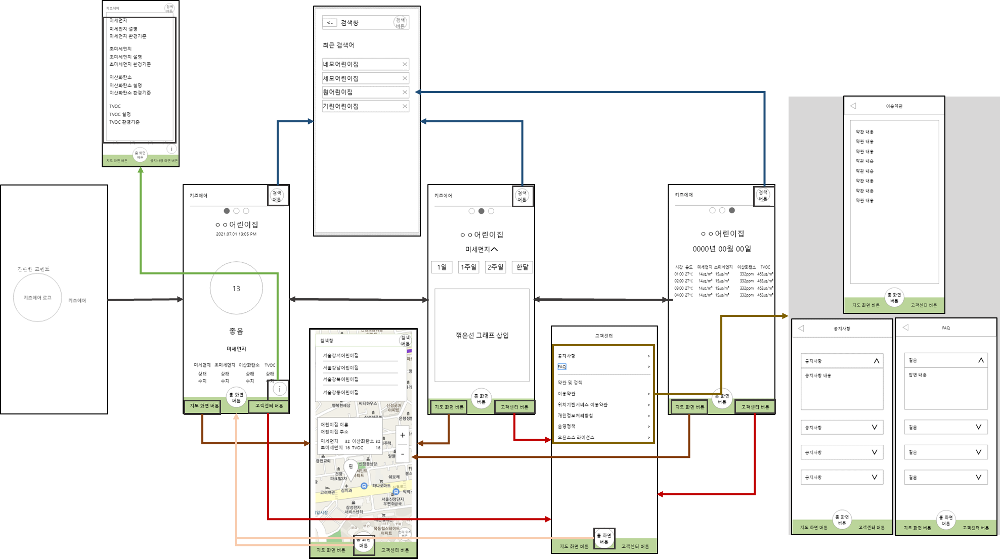
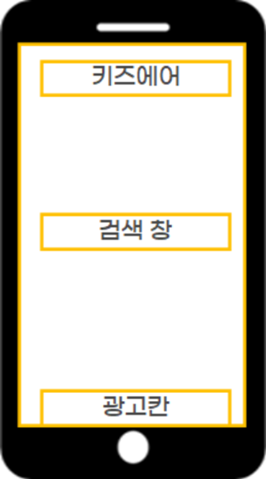
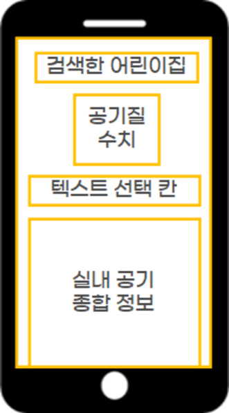
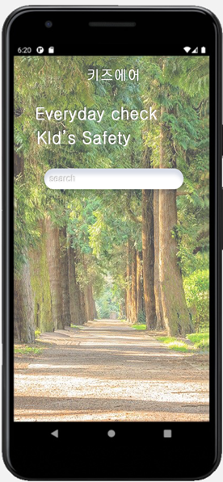

어린이집의 공기 상태를 보호자가 바로 확인할 수 있게 만든 앱입니다.
문서 소개
어린이 대기질 정보 앱을 기획하고 안드로이드로 구현한 기록입니다.
그래서 먼저 확인해야 할 것
어린이집이 왜 공개하는가
수치가 나쁘게 나오면 손해를 보는 쪽이 데이터를 내줘야 합니다
위협으로 적은 항목이 가장 현실적
스스로 SWOT의 위협 칸에 적은 것이 실제로 가장 먼저 닥칩니다
색과 이모지의 기준을 정해 둘 것
어느 수치부터 빨간색인지 정하지 않으면 같은 공기가 앱마다 다르게 보입니다
어린이집 실내 공기질을 보호자가 확인하게 만든 앱으로, 대학 재학 중 기획·디자인해 안드로이드로 출시했습니다. 기존 미세먼지 앱이 바깥 수치를 다루는 것과 달리 실내 측정값을 씁니다.
정부 공공데이터를 받아 색상과 이모지로 상태를 보여줍니다. 수치를 읽을 줄 몰라도 한눈에 판단이 서게 만드는 것이 목표였습니다.
실내 공기질 관리의 문제점을 분석했습니다.
환경 리스크
영유아에게는 바깥보다 실내 공기가 더 큰데, 어린이집 데이터를 모아 보여주는 서비스는 없었습니다.
사용자 니즈 파악
학부모들은 미세먼지가 심한 날, 자녀가 있는 공간의 환기 상태나 공기청정기 가동 여부를 직접 확인하고 싶어 하는 요구가 있었습니다.
강점과 기회를 바탕으로 전략을 수립했습니다.
첫 화면에서 상세 조회, 위젯 설정까지 한 줄로 이어지게 짰습니다. 찾는 정보에 터치 두 번 안에 닿게 하는 것이 기준이었습니다.
Kids Air 정보 설계 구조도
이미지를 클릭하면 확대됩니다

현재 위치나 자녀가 다니는 어린이집을 등록하여 주변 공기 상태를 한눈에 파악합니다.
앱을 직접 열지 않고도 스마트폰 배경화면에서 실시간 공기 상태를 바로 확인합니다.
실내 환경을 그대로 공개하는 것이 신뢰를 얻는 길입니다. 누구나 한눈에 판별할 수 있는 화면으로 만들었습니다.
복잡한 수치 대신 색과 이모지로 지금 위험도를 한눈에 보여 줍니다.
단순 현재 수치를 넘어, 시간대별 공기질 변화를 표로 제공하여 운영의 투명성과 신뢰도를 확보합니다.
가상 UI 체험
시간별 기록
| 시간 | 온도 | 미세 | 초미세 |
|---|---|---|---|
| 09:00 | 21 | 12 | 8 |
| 10:00 | 22 | 15 | 10 |
| 11:00 | 21 | 14 | 9 |
와이어프레임

최종 UI
와이어프레임

최종 UI
와이어프레임
최종 UI
최종 검색 UI

정부의 데이터를 사용자 친화적으로 재가공하여 영유아 보육 환경의 투명성을 높였습니다.
수치 공개를 통해 어린이집 스스로 쾌적한 환경을 유지하도록 유도하는 계기를 마련했습니다.
기획 당시 확인한 범위에서는 어린이집 실내 공기질만 다루는 앱이 없어, 기존 알림장 앱과 겹치지 않는 자리를 잡을 수 있다고 판단했습니다.
기획의 핵심은 어린이집 실내 공기질을 실시간으로 보여주는 것입니다.
이 한 문장에 확인이 필요한 전제가 들어 있습니다.
실시간 데이터가 존재하는가
공공데이터로 받을 수 있는 것
어린이집은 실내공기질 관련 법령에 따라 정기 측정 의무가 있습니다.
이 측정 결과는 공개 대상이 되므로 조회가 가능합니다.
공공데이터로 받기 어려운 것
지금 이 순간의 수치입니다.
정기 측정은 주기가 길어 오늘의 환기 상태를 알려주지 않습니다.
시간대별 변화를 보여주려면 각 시설에 센서가 설치되어 데이터를 송출해야 합니다.
그래서 서비스가 두 종류로 갈립니다
공공데이터만으로 만들면 시설별 정기 측정 결과를 조회하는 앱이 됩니다.
학부모가 어린이집을 고를 때 참고하는 용도이고, 매일 볼 서비스는 아닙니다.
시간대별 실시간 확인은 센서 설치가 먼저여야 성립합니다.
이 앱은 소프트웨어 기획이 아니라 센서 공급까지 포함한 사업이 됩니다.
어느 쪽을 만들 것인지 정하면 필요한 자원과 사업 구조가 달라집니다.
이 구분이 서 있어야 데이터를 어디서 받을 것인가에 답할 수 있습니다.
이 서비스의 사용자는 학부모이고, 데이터를 제공하는 쪽은 어린이집입니다.
둘의 이해가 같은 방향이 아니라는 점이 사업 구조의 핵심 과제입니다.
학부모가 원하는 것
자녀가 있는 공간의 실제 상태입니다.
나쁜 수치도 알아야 의미가 있습니다.
투명한 공개가 여기에 해당합니다.
어린이집 입장에서는
나쁜 수치가 공개되면 불리합니다.
좋을 때만 공개하면 데이터의 신뢰가 사라지고, 항상 공개하면 참여할 동기가 약해집니다.
참여 동기를 만드는 방향
절대 수치 대신 개선 활동을 보여주기
농도가 아니라 환기를 몇 번 했는지, 공기청정기를 언제 켰는지를 보여줍니다. 바깥이 나쁜 날의 수치는 시설 잘못이 아니지만 관리 노력은 시설이 정할 수 있으므로, 공개해도 불리하지 않습니다.
시설에 판매하는 구조로 두기
학부모용 무료 앱이 아니라 어린이집이 도입하는 신뢰 확보 도구로 위치를 잡습니다.
원아 모집에서 차별점이 되므로 시설이 비용을 낼 이유가 생기고, 데이터 제공자와 고객이 같아져 이해 상충이 사라집니다.
학부모부터 모으면 볼 데이터가 없고, 시설부터 잡으면 데이터와 사용자가 함께 들어옵니다. 어느 쪽이 먼저인지가 첫 결정입니다.
분석에서 위협으로 기존 대형 알림장 앱의 기능 확장을 꼽았습니다.
네 항목 중 실현 가능성이 가장 높은 것이고, 이유는 사용 빈도에 있습니다.
단독 앱은 열 이유가 하루 한 번입니다
하루 한두 번 보는 정보로는 앱을 깔아 둘 이유가 약합니다. 알림장 앱은 등하원 알림과 사진으로 매일 열리므로, 거기에 화면이 하나 붙으면 별도 앱이 설 자리가 없습니다.
위젯을 넣은 것은 이 문제에 대한 정확한 대응입니다
앱을 열지 않고 배경화면에서 보는 위젯은 낮은 사용 빈도를 비껴가는 방법입니다. 여는 행동이 필요 없으면 빈도가 낮아도 서비스가 남습니다.
다만 알림장 앱도 위젯을 만들 수 있습니다. 구조적인 답은 경쟁하지 않고 들어가는 것입니다. 알림장 앱에 데이터를 공급하면 위협이 유통 경로로 바뀝니다.
수치 대신 색상과 이모지로 알리는 쪽을 골랐습니다. 다만 판정 기준을 밝혀야 표시가 믿음을 얻습니다.
출시 후 확인할 지표